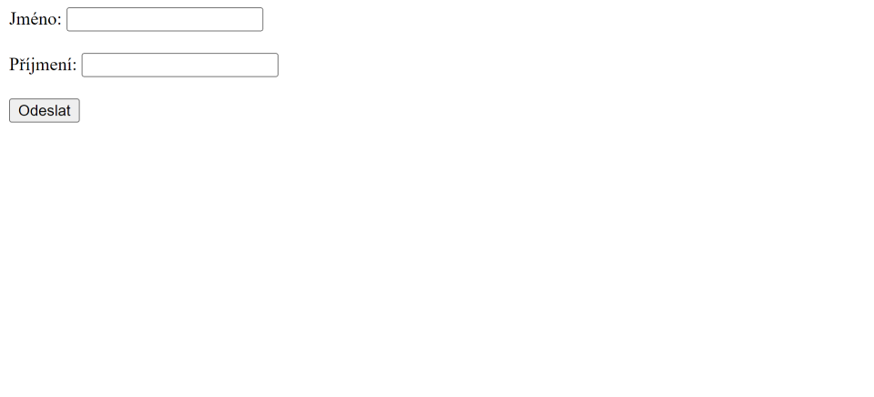

Struts framework
V této části si představíme framework jménem Struts (přesněji Struts 2). Jedná se o framework, který je postavený na MVC vzoru a vývoj webových aplikací je pro nás díky němu jednodušší. Nebudeme jej rozebírat příliš do hloubky. Akorát si ukážeme, jakým způsobem se s ním pracuje. Pokud by vás zaujal a rozhodli se o něm dozvědět více, tak můžete navštívít třeba dokumentaci.
Komponenty Struts 2 frameworku
Struts 2 se trochu liší od tradičního MVC frameworku. Controller v tomto případě mapuje příchozí requesty na action třídy. Představuje jej dispatcher, což je servlet filter, který je namapován na všechny URL. Action třídy jsou zodpovědné za zpracování requestů. Action třída ve Struts 2 představuje v podstatě model, ale kromě toho že zpracovává requesty a může pracovat s databází, tak je také zodpovědná za výběr JSP stránky (view) k vyrenderování. Kromě JSP stránek Struts podporuje také třeba šablonovací systémy jako je FreeMarker nebo Velocity. Navíc můžeme namísto stránky vytvářet i JSON nebo XML.
Struts 2 framework obsahuje ještě další komponenty, ale tím už se zabývat nebudeme. Jak jsem psal, Struts framework si tu jen představíme a vyzkoušíme použít.
Ukázka tvorby projektu
Pro ukázku práce se Struts frameworkem si vytvoříme úplně jednoduchou aplikaci. Uživateli se zobrazí stránka s formulářem, na které zadá jméno a příjmení. Po odeslání tohoto formuláře se mu vrátí stránka, která jej pozdraví.
Založíme si nový Maven projekt, a začneme tím, že si do souboru pom.xml kromě závislosti pro servlety přidáme také závislost pro Struts 2 framework.
- src
- main
- java
- resources
- webapp
- test
- java
- resources
- main
- target
<project xmlns="http://maven.apache.org/POM/4.0.0" xmlns:xsi="http://www.w3.org/2001/XMLSchema-instance" xsi:schemaLocation="http://maven.apache.org/POM/4.0.0 https://maven.apache.org/xsd/maven-4.0.0.xsd">
<modelVersion>4.0.0</modelVersion>
<groupId>io.github.jirkasa</groupId>
<artifactId>struts-projekt</artifactId>
<version>0.0.1-SNAPSHOT</version>
<packaging>war</packaging>
<name>struts-projekt</name>
<properties>
<project.build.sourceEncoding>UTF-8</project.build.sourceEncoding>
<project.reporting.outputEncoding>UTF-8</project.reporting.outputEncoding>
<java.version>17</java.version>
<maven.compiler.source>${java.version}</maven.compiler.source>
<maven.compiler.target>${java.version}</maven.compiler.target>
</properties>
<dependencies>
<dependency>
<groupId>javax.servlet</groupId>
<artifactId>javax.servlet-api</artifactId>
<version>4.0.1</version>
<scope>provided</scope>
</dependency>
<dependency>
<groupId>org.apache.struts</groupId>
<artifactId>struts2-core</artifactId>
<version>6.3.0.2</version>
</dependency>
</dependencies>
</project>První věc, kterou uděláme, je vytvoření web.xml souboru a nastavení filtru StrutsPrepareAndExecuteFilter ze Struts knihovny pro všechny příchozí requesty. Tento filtr vlastně představuje controller, který podle URL volá odpovídající action třídy. Následující ukázka ukazuje, jak jej v souboru web.xml můžeme nastavit.
- src/main/webapp/WEB-INF
- src/main/webapp/WEB-INF
<web-app xmlns:xsi="http://www.w3.org/2001/XMLSchema-instance"
xmlns="http://java.sun.com/xml/ns/javaee"
xmlns:web="http://Java.sun.com/xml/ns/javaee/web-app_3_0.xsd"
xsi:schemaLocation="http://java.sun.com/xml/ns/javaee
http://java.sun.com/xml/ns/javaee/web-app_3_0.xsd"
id="WebApp_ID" version="3.0">
<filter>
<filter-name>struts2</filter-name>
<filter-class>org.apache.struts2.dispatcher.filter.StrutsPrepareAndExecuteFilter</filter-class>
</filter>
<filter-mapping>
<filter-name>struts2</filter-name>
<url-pattern>/*</url-pattern>
</filter-mapping>
</web-app>Nyní se o mapování requestů bude starat Struts framework. Můžeme vytvořit action pro hlavní stránku, na které uživatel bude moci zadat své jméno a příjmení. Jelikož se jedná jen o vyrenderování stránky, tak ani nebudeme vytvářet žádnou action třídu, protože můžeme pro action (URL) nastavit přímo JSP stránku. JSP stránku vytvoříme ve složce WEB-INF/jsp, aby k ní uživatelé neměli přímý přístup a můžeme ji nazvat třeba jako "Home.jsp". Následující ukázka ukazuje její kód. Formulář směřuje na action vysledek, kterou později vytvoříme.
- src/main/webapp/WEB-INF/jsp
- src/main/webapp/WEB-INF/jsp
<%@ page contentType="text/html" pageEncoding="UTF-8"%>
<!DOCTYPE html>
<html>
<head>
<meta charset="UTF-8">
<title>Struts Framework</title>
</head>
<body>
<form action="./vysledek.action" method="POST">
<label for="jmeno">Jméno:</label> <input type="text" id="jmeno" name="jmeno" />
<br><br>
<label for="prijmeni">Příjmení:</label> <input type="text" id="prijmeni" name="prijmeni" />
<br><br>
<button>Odeslat</button>
</form>
</body>
</html>Struts se konfiguruje v souboru struts.xml, který se vytváří v src/main/resources složce. Tato složka slouží k ukládání věcí, které nejsou Java třídy. Následující ukázka ukazuje základní kód souboru. Kořenovým elementem je element struts.
- src/main/resources
<?xml version="1.0" encoding="UTF-8"?>
<!DOCTYPE struts PUBLIC
"-//Apache Software Foundation//DTD Struts Configuration 2.5//EN"
"http://struts.apache.org/dtds/struts-2.5.dtd">
<struts>
</struts>Pomocí elementu constant a nastavením jeho atributu name na "struts.devMode" můžeme atributem value nastavit, zda se má aplikace spustit v módu pro vývoj. To nyní chceme, takže nastavíme atribut value na hodnotu true.
- src/main/resources
<?xml version="1.0" encoding="UTF-8"?>
<!DOCTYPE struts PUBLIC
"-//Apache Software Foundation//DTD Struts Configuration 2.5//EN"
"http://struts.apache.org/dtds/struts-2.5.dtd">
<struts>
<constant name="struts.devMode" value="true" />
</struts>Teď v souboru struts.xml nadefinujeme action pro naši vytvořenou JSP stránku. To se dělá uvnitř elementu package (nebudu zabýhat do detailů) elementem action, kde atributem name nastavíme název action a pomocí podelementu result JSP stránku, která se má použít. Následující ukázka ukazuje upravený soubor. Jako název action nastavujeme prázdný řetězec, aby se použila pro domovskou stránku. Nevím jestli je to úplně správné řešení, ale funguje to.
- src/main/resources
<?xml version="1.0" encoding="UTF-8"?>
<!DOCTYPE struts PUBLIC
"-//Apache Software Foundation//DTD Struts Configuration 2.5//EN"
"http://struts.apache.org/dtds/struts-2.5.dtd">
<struts>
<constant name="struts.devMode" value="true" />
<package name="default" extends="struts-default">
<action name="">
<result>/WEB-INF/jsp/Home.jsp</result>
</action>
</package>
</struts>Po spuštění aplikace a navštívení http://localhost:8080/struts-projekt/ by jste měli vidět stránku, kterou ukazuje následující obrázek.
Teď si založíme action pro zpracování formuláře a zobrazení stránky s pozdravem. Tentokrát již budeme potřebovat i action třídu, jelikož budeme zpracovávat formulář. Action třídy jsou ve Struts 2 jednoduše POJO (Plain Old Java Object), takže nemusí dědit od žádné třídy. Akorát mohou obsahovat execute metodu, která se volá pro zpracování requestu. Založíme si tedy třídu (v nějakém Java balíčku), kterou můžeme pojmenovat jako Vysledek. Jako vlastnosti jí nastavíme položky, které se posílají ve formuláři. Vytvoříme pro ně také gettery a settery a automaticky se jim z odeslaného formuláře nastaví hodnoty. Následující ukázka ukazuje kód třídy.
package io.github.jirkasa;
public class Vysledek {
private String jmeno;
private String prijmeni;
public String getJmeno() {
return jmeno;
}
public void setJmeno(String jmeno) {
this.jmeno = jmeno;
}
public String getPrijmeni() {
return prijmeni;
}
public void setPrijmeni(String prijmeni) {
this.prijmeni = prijmeni;
}
}Pro action vytvoříme JSP stránku jménem "Vysledek.jsp", ve které hodnoty formuláře použijeme při tvorbě pozdravu. Ukazuje ji následující ukázka. Pro výpis hodnot se používá tag jménem property z knihovny tagů, které nám Struts framework poskytuje pod uri "/struts-tags".
- src/main/webapp/WEB-INF/jsp
<%@ page contentType="text/html" pageEncoding="UTF-8"%>
<%@ taglib uri="/struts-tags" prefix="s" %>
<!DOCTYPE html>
<html>
<head>
<meta charset="UTF-8">
<title>Struts Framework</title>
</head>
<body>
<p>Ahoj <s:property value="jmeno"/> <s:property value="prijmeni"/></p>
</body>
</html>Teď si action nadefinujeme v souboru struts.xml, jak ukazuje následující ukázka. Jméno action jsme nastavili na "vysledek", jelikož na tuto action odkazuje formulář na úvodní stránce a atributem class jsme nastavili action třídu. Elementu result jsme také nastavili název pomocí atributu name. To bychom dělat nemuseli, ale chtěl bych vám u action třídy ukázat metodu execute.
- src/main/resources
<?xml version="1.0" encoding="UTF-8"?>
<!DOCTYPE struts PUBLIC
"-//Apache Software Foundation//DTD Struts Configuration 2.5//EN"
"http://struts.apache.org/dtds/struts-2.5.dtd">
<struts>
<constant name="struts.devMode" value="true" />
<package name="default" extends="struts-default">
<action name="">
<result>/WEB-INF/jsp/Home.jsp</result>
</action>
<action name="vysledek">
<result name="stranka">/WEB-INF/jsp/Vysledek.jsp</result>
</action>
</package>
</struts>Metoda execute v action třídě určuje, jaká stránka se má vyrenderovat. Action totiž může mít nastavených více result elementů. V naší třídě tedy metodu execute implementujeme a vrátíme v ní název, který jsme nastavili result elementu.
package io.github.jirkasa;
public class Vysledek {
private String jmeno;
private String prijmeni;
public String getJmeno() {
return jmeno;
}
public void setJmeno(String jmeno) {
this.jmeno = jmeno;
}
public String getPrijmeni() {
return prijmeni;
}
public void setPrijmeni(String prijmeni) {
this.prijmeni = prijmeni;
}
public String execute() {
return "stranka";
}
}Naše aplikace je hotová. Pokud si na úvodní stránce zkusíte vyplnit jméno a příjmení, tak se vám zobrazí stránka s pozdravem.
Více se Struts frameworkem zabývat nebudeme. Tato část měla za cíl vám ho jen představit. Pokud se o něm chcete dozvědět více, tak si musíte najít jiný zdroj.